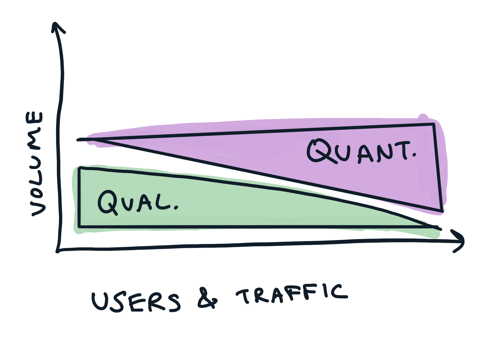
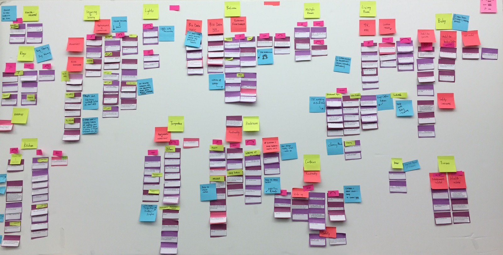
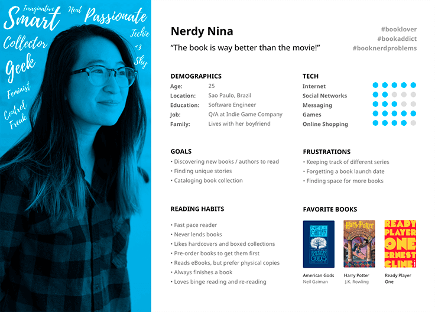
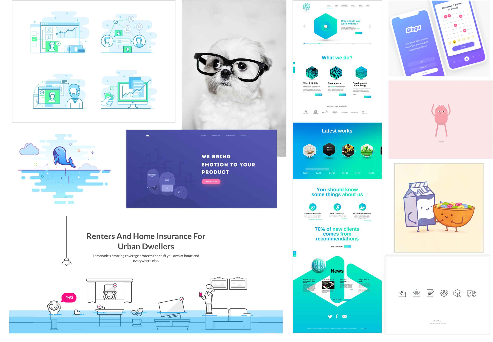
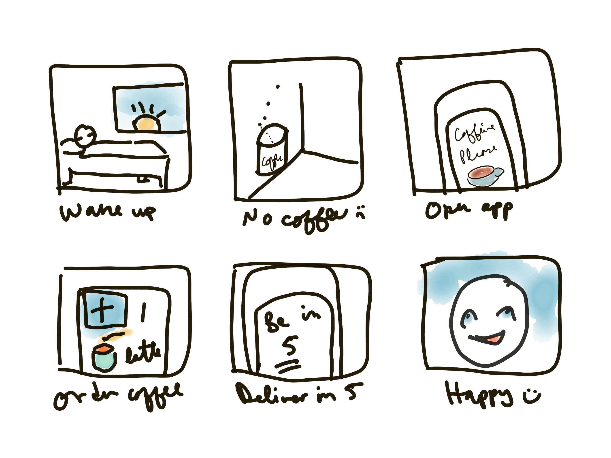
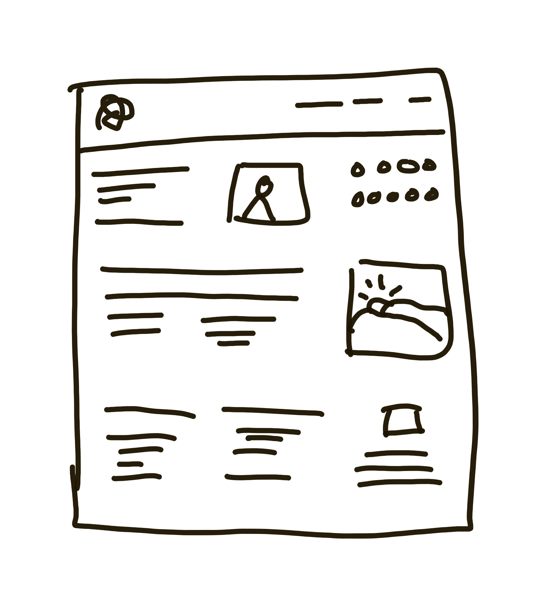

UX for developers
-Or-
Congratulations, you're a designer now!
Hi! I'm Laura
Agenda
- UX Research
-
- Intro activity: UX chinese whispers
- World building - UX, UI, Design thinking
- UX Research
-
- Overview
- Methodologies
- Research outputs
- Break for lunch
- UX Design
-
- Card sorting activity
- UX Design
-
- Overview & theory
- Design outputs
- Design critique
- Design activities
So what the bloody hell even is UX, anyway!?
2 design disciplines
UX = User Experience
UI = User Interface
Important
UX != UI
Other terms you might hear
- Interaction / Interactive Designer
- CX = Customer Experience
- Service Design
- Human-Centered Design
- Design Thinking
- Others?
A dirty secret...
UX (user experience) as a discipline is messy, imperfect, filled with overlapping methodologies. It's an umbrella term that's so broad it can feel meaningless. It sometimes lacks internal consistency. It's a work in progress. It's immature and it needs to get better.
But...
This isn't an exuse to dismiss UX
All of the javascript
Why should I care about UX?
Your ability to practice introspection and empathy and then use your learning in each to develop the other, in other words, your ability to practice inpathy, shifts your mindset around how you interact with others.
-Aimee Gonzalez-Cameron
UX domains
UX Research
UX Design
1. UX Research
Qualitative vs Quantitative data
Qualitative vs Quantitative data

Learn...
A. About the user
B. Can they use the thing?
C. Do they want to use the thing?
A. Learn about the user
User interviews
Card sorting
Diary studies
Co-design workshops
Ethnographic studies
Quantitative surveys
B. Can they use the thing?
Usability testing
(Remote, in-person, in a lab)
Guerilla testing
A/B Testing
Eye tracking
C. Do they want to use the thing?
Product-market fit
Gateway test
A/B Testing
So we have data, now what?
Synthesis
Affinity mapping
Sharing themes and insights
Quantitative metrics
Thick data analysis
UX artefacts to communicate learnings
Research Artefacts
Affinity Mapping
User Personas
Customer Journey

Empathy Mapping

Diary Study

Further reading
2. UX Design
UX Design considers
Cognitive load (how many nodes?)
Mental map (how to get around)
User empathy (emotions and needs)
Business needs (how can we succeed?)
UX Design decides
Which components go on the screen
Which order they go in
Animation and motion of UI
Accessibility (supporting users of all kinds)
How to name & label elements on the screen
Visual hierarchy and relationships
User flows (multi-step processes)
UX Design produces
Accessibility audits
Site map
User-centered labels
User Stories
User Flows
Moodboards & Storyboards
Wireframes & Prototypes
Moodboards
Storyboards
Wireframes
Cool story!
Now let's talk collaboration
2 kinds of designers
Why can it be so hard to talk to designers about design?
Let's apply some user empathy
- feedback without context
- back seat designing
- git-blame or competetive work cultures
- focus on aesthetics or trends over strategy
If developers got feedback like designers...
Hey! I know this isn't a PR yet, but why did you pick that class name...?
Hey - FYI I think I saw that library in use at company XX the other day. Don't want to copy code, hey!
I'm not a programmer, but, that function looks awfully complex... Shouldn't it be simpler!?
So how do we do it better?
Focus on...
Getting the context
The intended audience
Design strategy
For example
I had some responses to your design, but I'm not sure I have all the most recent context. Could you give me a quick update before I offer any feedback?
For example
I'm concerned this design will be hard to use for our target audience because the added complexity increases cognitive load...
For example
Can we chat about hierarchy of information on this view? I think the visual prominence given to XX is unnecessary given our strategy of getting users to focus on YY.
Aesthetic preference
-vs-
Design strategy
We try not to get them mixed up
Activity time!
Let's practice some design critique
Given a door handle...
Which choice do you think is more strategic
(less about personal tastes)?

- A) Users may not see it on a black door
- B) It just doesn't 'pop' enough
Given a checkout flow...
Which choice do you think is more strategic?
- A) I don't like this shade of turquoise
- B) I'm not sure which is the primary button
Given this hospital software...
Which feedback do you think is more strategic?
- A) It's too much information to process
- B) It looks old skool
Activity time!
Let's practice some UX design
The problem
Eric is trying to save money on household costs.
Research learnings
- He thinks he could probably spend less on food and cleaning supplies he buys regularly
- Doesn't want to compromise on ethics or quality
- He is time poor
- Doesn't enjoy shopping around
- He'd love to save time
Bullet points & notes
1 minute
Sketch your first idea
2 minutes
Crazy 8s (mini)
Share & compare
2 minutes
meta-solutions
The space of possible solutions to any given user problem is infinite
More resources
- Cognitive Bias Codex http://ritholtz.com/2016/09/cognitive-bias-codex/
- Julia Claviens: http://www.mmweekly.com/
Further reading
Laws of UX • Good UI • UX Checklist
User Experience Design Process
Don't Make Me Think, Revisited
Bonus activity
😎😎😎
Thanks!!
Get the slides
summerscope.github.io/slides/ux-for-developers-ddd